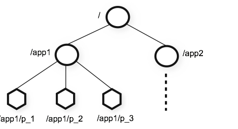
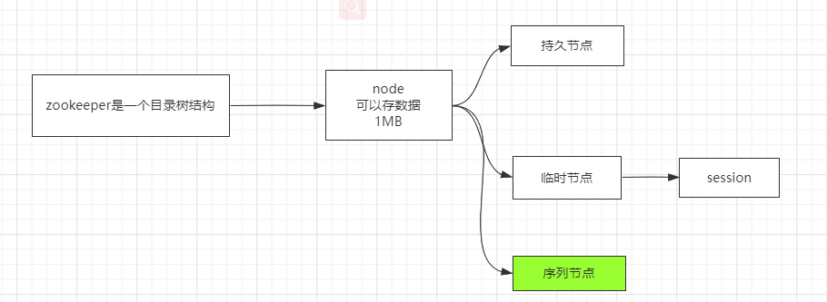
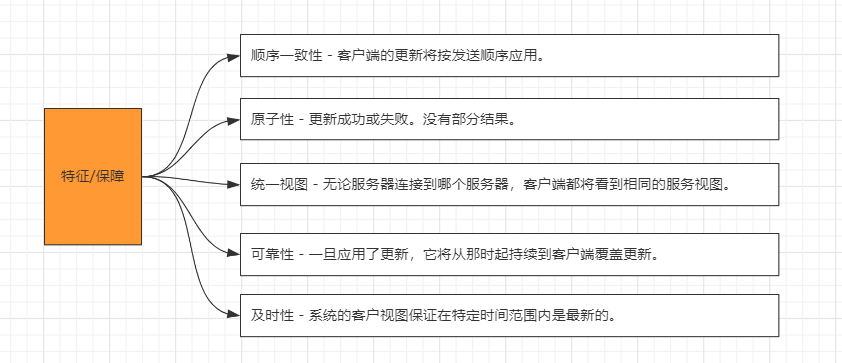
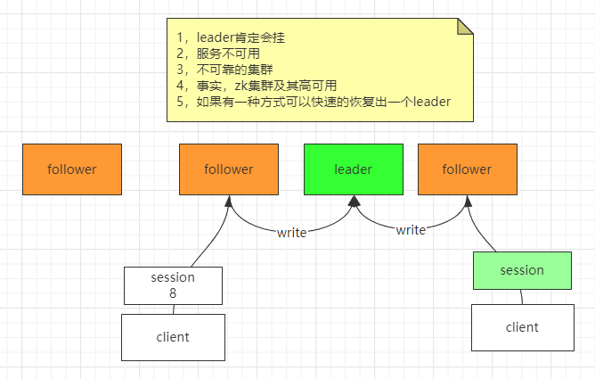

简介
针对官方文档进行的翻译和着重,也可以参照菜鸟教程-zookeeper
ZooKeeper:针对分布式应用的分布式协调服务
ZooKeeper是一个分布式、开源的分布式应用协调服务。它公开了一组简单的原语，分布式应用程序可以在此基础上构建，以实现同步、配置维护、组和命名等更高级别的服务。它的设计是易于编程的，并使用了一个数据模型，其样式类似于熟悉的文件系统的目录树结构。它在Java中运行，并且有Java和C的绑定。众所周知，协调服务很难做好。它们特别容易出现竞争条件和死锁等错误
设计目的(特点)
simple
ZooKeeper允许分布式进程通过一个共享的层次命名空间相互协调，这个命名空间的组织方式类似于标准的文件系统。命名空间由数据寄存器组成——用ZooKeeper的话说叫做znode——它们类似于文件和目录。与典型的存储文件系统不同，ZooKeeper的数据保存在内存中，这意味着ZooKeeper可以实现高吞吐量和低时延
ZooKeeper的实现注重高性能、高可用性和严格的有序访问。ZooKeeper的性能方面意味着它可以在大型分布式系统中使用。可靠性方面使它不会成为单点故障。严格的顺序意味着复杂的同步原语可以在客户机上实现
replicated
就像它所协调的分布式进程一样，ZooKeeper本身也被复制到一组称为集合的主机上**(主从复制)**
组成ZooKeeper服务的服务器必须互相了解。它们维护内存中的状态映像、事务日志和持久化存储中的快照。只要大多数服务器可用，ZooKeeper服务就可用。
客户端连接到单个ZooKeeper服务器。客户机维护一个TCP连接，通过该连接发送请求、获取响应、监视事件和发送心跳。如果到服务器的TCP连接断开，客户端将连接到另一个服务器
ordered
ZooKeeper会给每个更新戳一个数字，这个数字反映了所有ZooKeeper事务的顺序。后续操作可以使用该顺序来实现更高级的抽象，比如同步原语。
fast
在“读为主”的工作负载中，它的速度尤其快。ZooKeeper应用程序运行在数千台机器上，当读比写更常见时，它的性能最好，比率约为10:1。
数据模型和分层名称空间
ZooKeeper提供的命名空间很像标准文件系统的命名空间。名称是一个由斜杠(/)分隔的路径元素序列。ZooKeeper命名空间中的每个节点都有一个路径来标识。

节点和临时节点
与标准的文件系统不同，ZooKeeper名称空间中的每个节点都可以有与其关联的数据以及子节点。这就像拥有一个允许文件同时也是目录的文件系统。(ZooKeeper是用来存储协调数据的:状态信息、配置信息、位置信息等，所以每个节点存储的数据通常很小，在字节到千字节之间。)我们使用术语znode来说明我们谈论的是ZooKeeper数据节点。
znode维护一个统计结构，其中包括数据更改的版本号、ACL更改和时间戳，以允许缓存验证和协调更新。znode的数据每次更改，版本号就会增加。例如，每当客户端检索数据时，它也会接收到数据的版本。
存储在名称空间中的每个znode上的数据是原子式读写的。读获取与znode关联的所有数据字节，写则替换所有数据。每个节点都有一个访问控制列表(Access Control List, ACL)来限制谁可以做什么。
ZooKeeper也有临时节点的概念。只要创建znode的会话处于活动状态，这些znode就会存在。当会话结束时，删除znode。
- 持久节点
- 临时节点(session)
- 序列节点

条件更新和监视
ZooKeeper支持watch的概念。客户端可以在znode上设置监视。当znode发生变化时，将触发并删除一个watch。当一个监视被触发时，客户端收到一个数据包，说znode已经改变了。如果客户端与其中一个ZooKeeper服务器的连接断开，客户端会收到本地的通知。
3.6.0新功能:客户端还可以在znode上设置永久的递归监视，这些监视在被触发时不会被删除，并且会触发已注册的znode以及任何子znode的变化。
担保
ZooKeeper非常快速和简单。但是，由于它的目标是作为构建更复杂服务(如同步)的基础，因此它提供了一组保证。这些都是:
顺序一致性
客户端的更新将按照发送的顺序进行。
原子性
更新成功或失败没有部分结果。
单系统映像
客户机将看到相同的服务视图，而不管它连接到哪个服务器。也就是说，客户端永远不会看到系统的旧视图，即使客户端使用相同的会话故障转移到不同的服务器。
可靠性
一旦应用了更新，它将从那时起持续存在，直到客户端覆盖更新。
及时性
保证系统的客户端视图在一定的时间范围内是最新的。

简单的API
ZooKeeper的设计目标之一是提供一个非常简单的编程接口。因此，它只支持以下操作:
- create : creates a node at a location in the tree
- delete : deletes a node
- exists : tests if a node exists at a location
- get data : reads the data from a node
- set data : writes data to a node
- get children : retrieves a list of children of a node
- sync : waits for data to be propagated
实施
ZooKeeper组件展示了ZooKeeper服务的高级组件。除了请求处理器之外，每个组成ZooKeeper服务的服务器都会复制自己的组件副本。
复制的数据库是包含整个数据树的内存数据库。更新被记录到磁盘以实现可恢复性，写操作在应用到内存数据库之前被序列化到磁盘。
每个ZooKeeper服务器都为客户端提供服务。客户端连接到一个服务器来提交请求。读取请求由每个服务器数据库的本地副本提供服务。改变服务状态的请求(写请求)由协议协议处理。
作为协议的一部分，所有来自客户端的写请求都被转发到一个称为leader的服务器上。剩下的ZooKeeper服务器，称为follower，接收来自leader的消息提议，并同意消息传递。消息层负责在失败时替换领导者，并将追随者与领导者同步。
ZooKeeper使用自定义的原子消息传递协议。由于消息层是原子的，ZooKeeper可以保证本地副本不会发散。当leader收到写请求时，它会计算出系统的状态，并将其转换为一个事务来捕获这个新状态。
follower 读
leader 读写
临时节点有session
znode存的数据很小,目的是不要把zookeeper当数据库用
